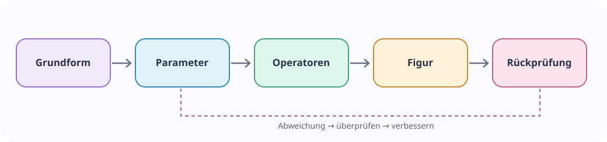

Forschung · Datenformate · Skills · Standards
Eine Geo-KI, die mit der Wissenschaft sprechen kann
Von der geometrischen Figur zum CAD-Modell, vom Wissenschaftsdatensatz zur Visualisierung: Wir suchen freie Bibliotheken und offene Schnittstellen, die nicht nur Daten verschieben, sondern ihre Bedeutung erhalten.
Acht Forschungsfamilien
Für jedes Format werden Version, Schema, Einheiten, Lizenz, Adapter, Roundtrip-Verlust und Prüfstand dokumentiert. Der Katalog ist ein Kandidateninventar, nicht bereits eine Sammlung implementierter Konverter.
Formatregister wird geladen …

Die Datenkette unterscheidet die sichtbare Figur von ihrer mathematischen Beschreibung und den Eigenschaften, die bei der Übertragung erhalten bleiben müssen.
Vom Forschungsmodell zum ausführbaren Skill
Ein neues wissenschaftlich-technisches Paper beschreibt die Adapterarchitektur, die Unterschiede zwischen Syntax und Semantik sowie prüfbare Konvertierungswege.
Das maschinenlesbare Formatregister ansehen · Den nächsten Geo-KI-Meilenstein mitentwickeln
Welche Formate fehlen dir?
Bringe Fachbibliotheken, Datenformate und typische Konvertierungsprobleme ein. Gemeinsam können wir Adapter testen, die Ergebnisse dokumentieren und neue Verbindungen aufdecken.
Gleiche Schnittstelle bedeutet nicht gleiches Fachmodell
Eine erfolgreiche Dateikonvertierung beweist Datenkompatibilität innerhalb des getesteten Umfangs. Sie beweist weder die Identität von Operatoren noch gleiche Einheiten, Geltungsbereiche oder physikalische Aussagen. Für Skillkomposition benötigen wir deshalb getrennte Prüfungen für Format, Bedeutung, Berechnung und Rückrechnung.